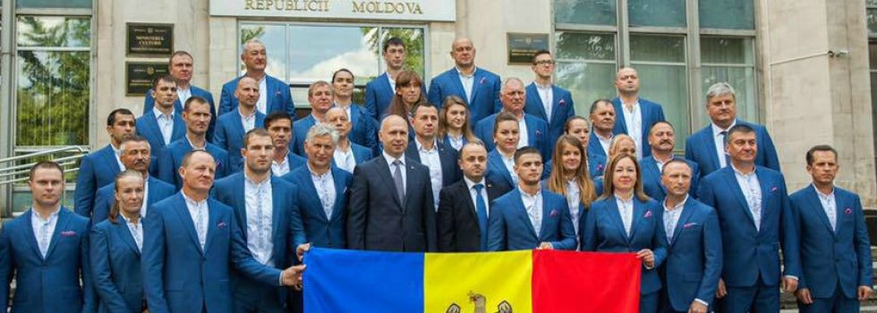

Sport :
Deşi este o ţară mică, sportivii din Republica Moldova înregistrează performanțe aproape în orice tip de sport. Cele mai practicate sporturi din Republica Moldova sunt:
Trânta - considerat sportul naţional al moldovenilor. Acesta este practicat aproape în fiecare localitate, inclusiv de copii, care încearcă astfel să-şi încerce puterile unul asupra celuilalt. Trânta este un sport de lupte corp la corp între doi sau mai mulţi oameni neânărmaţi, care caută să se doboare unul pe altul. Este înrudit cu luptele greco-romane. Este interzisă lovirea inamicului căzut, fiind oprită continuarea luptei până la revenirea adversarului. În anul 1968, regizorul moldovean, Anatol Codru, a realizat filmul „Trânta”, în care sunt ilustrate tradiţiile acestui sport.
Fotbal - e sportul rege şi e cel mai popular inclusiv la noi în ţară. Avem un campionat naţional între cluburi, campionate ale diviziilor inferioare, precum şi campionate ale juniorilor. Fotbalul este practicat atât de băieţi, cât şi de fete. Atât echipele de club, cât şi cele naţionale au avut, de-a lungul istoriei, meciuri foarte bune, care au impresionat Europa fotbalistică. În ceea ce priveşte performanţele echipelor de club, cele mai bune le-au obţinut Zimbru Chişinău, Sheriff Tiraspol şi Dacia Chişinău, care s-au calificat în grupele Cupei Uefa şi, respectiv, Europa League.
Rugby - este un sport popular în Moldova, mai ales că în ultimii ani echipa naţională obţine tot mai multe rezultate bune. Iar Federaţia europeană de rugby încredinţează tot mai des desfăşurarea campionatelor europene în Republica Moldova. Ultimii zece ani au adus cele mai înalte distincţii. Astfel, echipa Moldovei este repezentă în lista celor mai bune echipe din lume la Rugby-7 (O uniune a echipelor de rugby din şapte jucători), iar la Campionatul european din 2007, Moldova a obţinut medalia de bronz.
Box - este un sport apreciat mai ales pentru performanţele pe care le-au obţinut sportivii. De fapt, cele mai multe medalii la Jocurile Olimpice, Republica Moldova le-a câştigat anume prin acest sport. Federaţia de Box din Moldova aminteşte că printre pionerii boxului moldovenesc se numără Iurie Muzlaev, Mihail Agulinicov, Rostislav Şustov, Isidor Goldştein, Vitalie Dziuba, Eugen Belîi, Pavel Luscevschii, Boris Petuhov, Dumitru Dadiani şi mulţi alţi mari sportivi şi antrenori. Succesele boxului moldovenesc, după obţinerea independenţei Republicii Moldova, s-au datorat şcolii de box din Grimăncăuţi, Briceni, în fruntea căreia timp îndelungat se află antrenorul emerit din Republica Moldova, maestrul în sport din URSS, colonelul Petru Caduc şi consoarta sa Svetlana Caduc. În anul 2000, la Jocurile Olimpice de la Sidney (Australia) Vitalie Gruşac a obţinut medalia de bronz, iar în 2008, la Jocurile Olimpice de la Beijing (China), aceeaşi performanţă a fost obţinută de Veaceslav Gojan. În 2011, pentru prima oară în istoria boxului moldovenesc, Veaceslav Gojan a obţinut titlul de Campion al Europei.
Sportul înseamnă energie, eleganță și prestanță.
- Ovidiu Kerekes